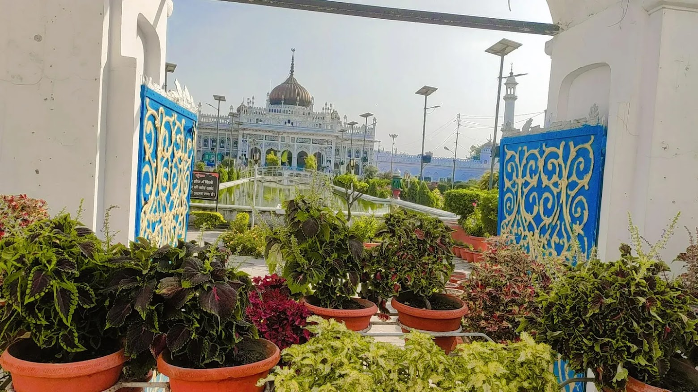
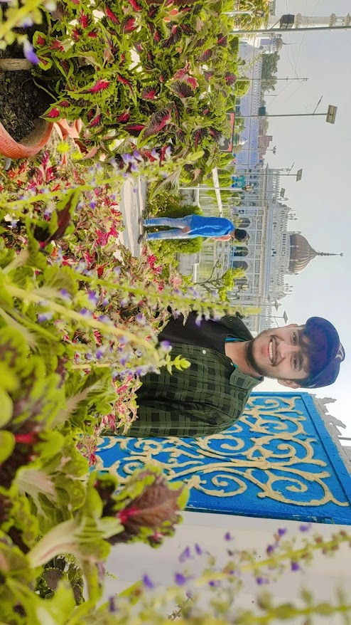
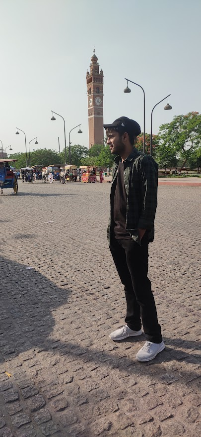
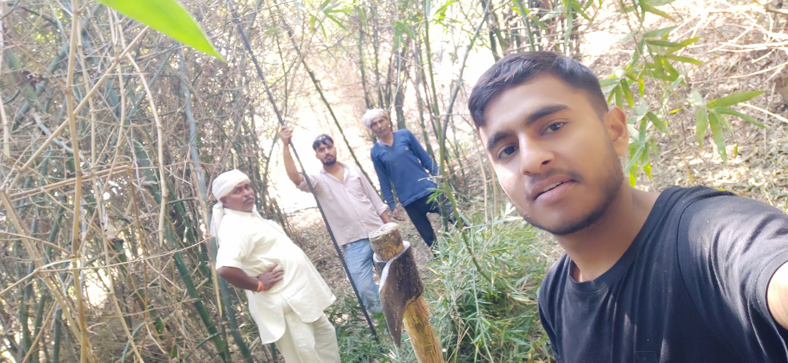
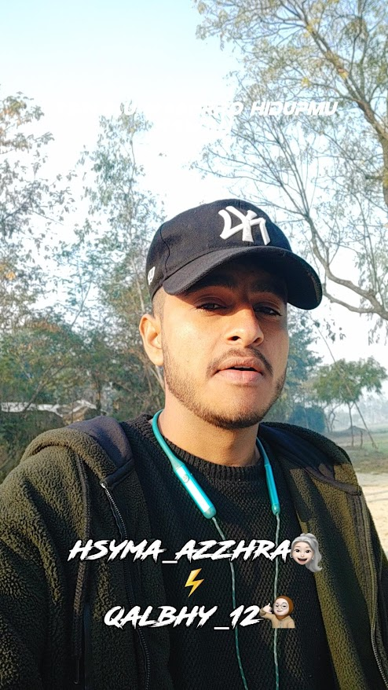
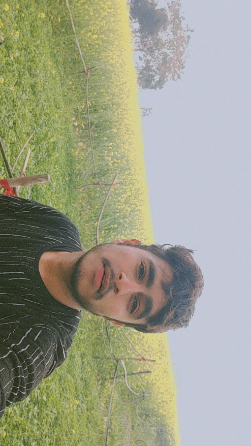
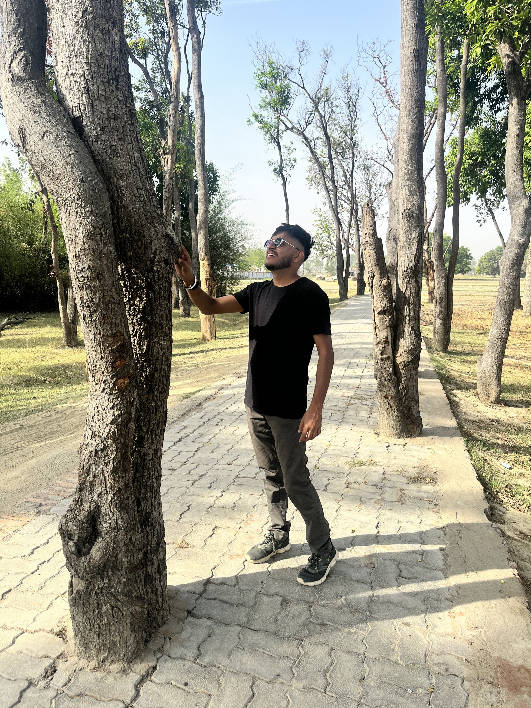
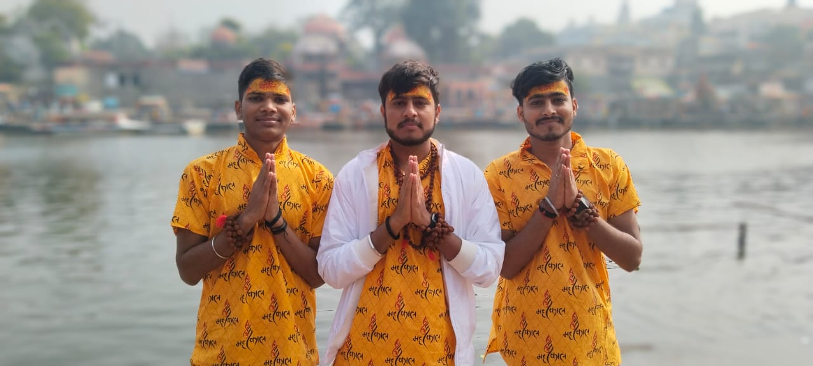
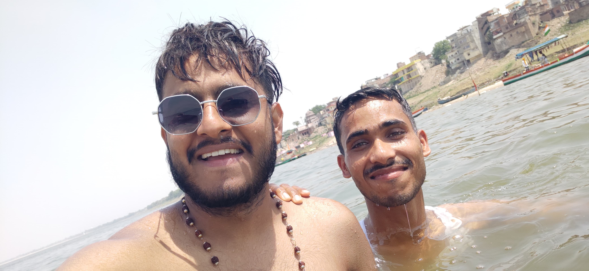
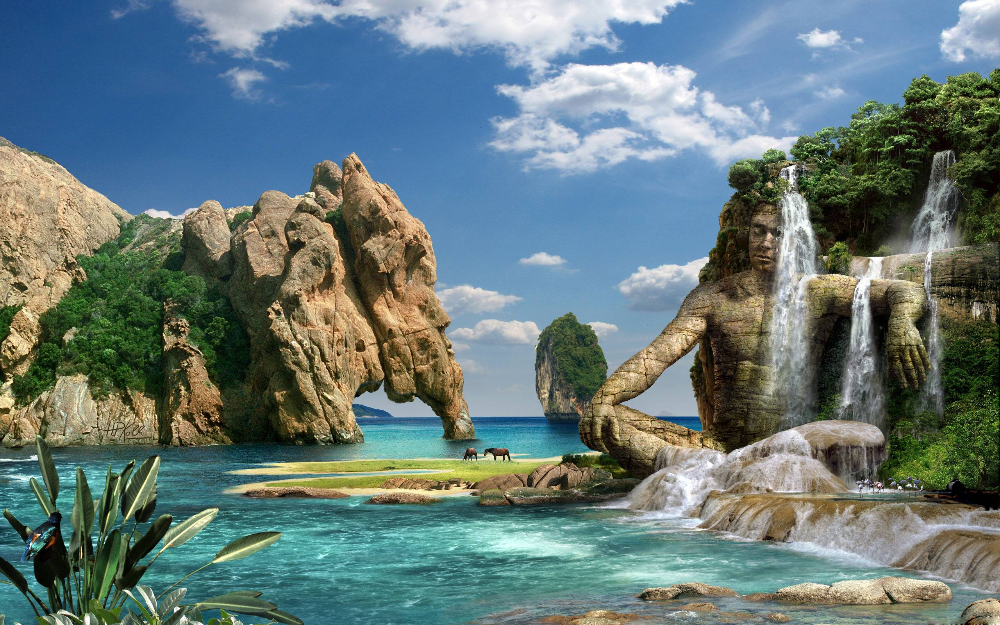

1 -"1 - My first trip to Lucknow was unforgettable! Exploring the Imambada was a highlight, with its stunning architecture and rich history making it an amazing experience. 🕌✨"

2 - "2 - After marveling at the Imambada, my next stop was Chhota Imambada. Its serene beauty and intricate details made it a perfect continuation of my Lucknow adventure. 🌟🕌"

3 - "3 - My trip to Lucknow wouldn’t have been complete without seeing the Clock Tower, the largest in Asia! 🕰️🏛️"

4 -"4 - One of the most memorable moments of my Lucknow trip was visiting War Pahadpur, the village where my ancestors lived 200 years ago. Exploring this historical place with my brother Vinay, my father, and a family member was a truly special adventure. The connection to my roots made this visit incredibly m

"5 - Exploring my ancestral village, War Pahadpur, was an incredible experience. Walking through the familiar yet historic streets with my brother, father, and a family member was a journey through time, connecting deeply with my heritage. This part of my Lucknow trip was truly special. 🌾🗺️"

6 -"6 - My village, Chauhanpur, is blessed with over 90 acres of vibrant, green fields. Farming has always been a passion of mine, inspired by my grandfather, who was a dedicated farmer. I find joy in the lush, colorful landscapes and the timeless connection to the land. 🌾🌱"

7 -"7 - My love for nature took me to a charming village where I encountered a beautiful sight: trees gracefully standing in the middle of the road. The way the villagers have preserved these trees, allowing nature to coexist with daily life, truly touched my heart. It's a testament to their deep respect for th

8 -"8 - My 8th trip took me to Ujjain with my brother Vineet and his friend Aaan, marking the end of 2023 in a truly special way. We welcomed the new year under the blessings of Lord Shiva, enjoyed watching the movie 'Salar,' and embarked on some thrilling adventures. Exploring the temples and experiencing the

9 - "9 - My 9th trip was an unforgettable adventure to Mirzapur, where I visited Shree Mata Vindhyachal Devi with my best friends Vikas and Pravesh. Exploring the divine presence of Goddess Bhagwati was a profound experience. This trip, the longest I’ve ever taken by bike, was filled with joy and endless excite"

10 - "10 - My latest adventure took me to Elephant Valley, a serene and breathtaking destination. The experience was incredibly enriching, with the majestic elephants and lush surroundings creating a perfect escape into nature. It was a wonderful way to end my series of memorable trips. 🐘🌿"